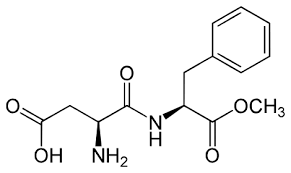
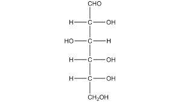

CUKIER
A
SŁODZIKI
Dzielą się one na 3 główne kategorie:

ASPARTAM
GLUKOZA| Wady | Zalety |
| Przyrost masy ciała | dobre źródło energi |
| Zwieksza ryzyko chorób np. cukrzycy 2. stopnia | |
| problemy z uzębnieniem |
| Wady | Zalety |
| Problemy trawienne | niska kaloryczność |
| Wpływ na apetyt | nie przyczynia się do niszczenia zębów |
| Niepewny wpływ na zdrowie | Mogą spożywać go cukrzycy |